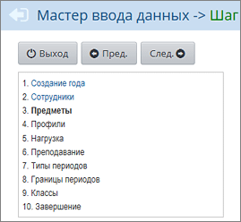

Шаг 2. Список сотрудников
Для того, чтобы ввести список сотрудников, вы можете воспользоваться средством импорта, встроенным в "Сетевой Город". Как пользоваться этим инструментом, вы можете узнать по ссылке Как пользоваться импортом. Вы также можете с помощью кнопок Добавить и Удалить вручную отредактировать список сотрудников.
Не обязательно вводить сразу всех сотрудников вашей школы. Вы можете это сделать уже после прохождения всех шагов Мастера на экране Сотрудники пункта меню Управление. Однако, требуется ввести всех классных руководителей, а также как минимум по одному учителю для каждого предмета. Для всех предметов, которые определены на Шаге 6. Преподавание, нужно обязательно указать учителей.
Можно ли потом отредактировать данные о сотрудниках, введенные импортом
Все данные, введенные с помощью инструмента импорта, могут быть в дальнейшем изменены пользователем, имеющим право доступа Вести список сотрудников.
Как осуществляется навигация внутри Мастера ввода данных
Вы можете попасть на любой из пройденных ранее этапов и изменить данные. Для этого достаточно нажать на соответствующую ссылку в левой части экрана:

Можно ли выйти из Мастера и впоследствии продолжить заполнение Мастера?
Вы можете в любой момент приостановить работу и выйти из Мастера. Для этого нужно, во-первых, нажать кнопку Сохранить, чтобы обеспечить сохранность уже введенных данных. И после этого нажать кнопку Выход.
Важно! Для выхода из Мастера ввода данных всегда нужно нажимать кнопку Выход, а не закрывать окно браузера! В противном случае система может оказаться на несколько минут заблокированной.